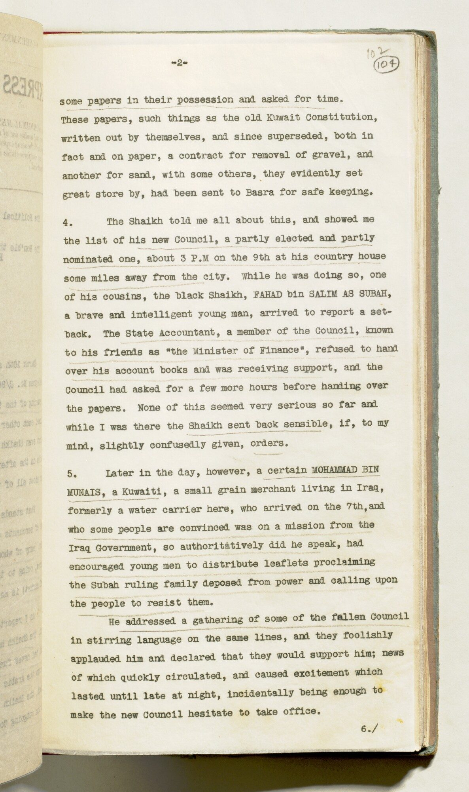
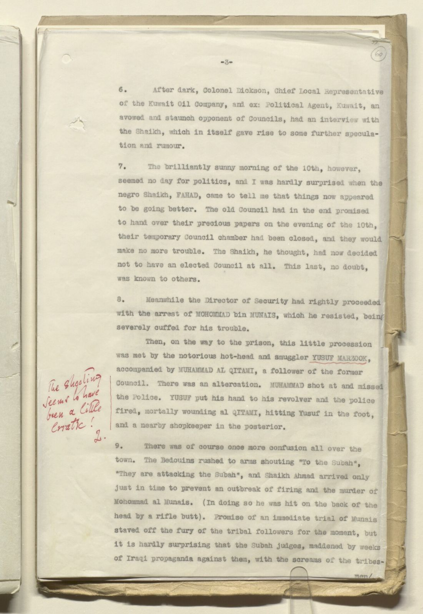
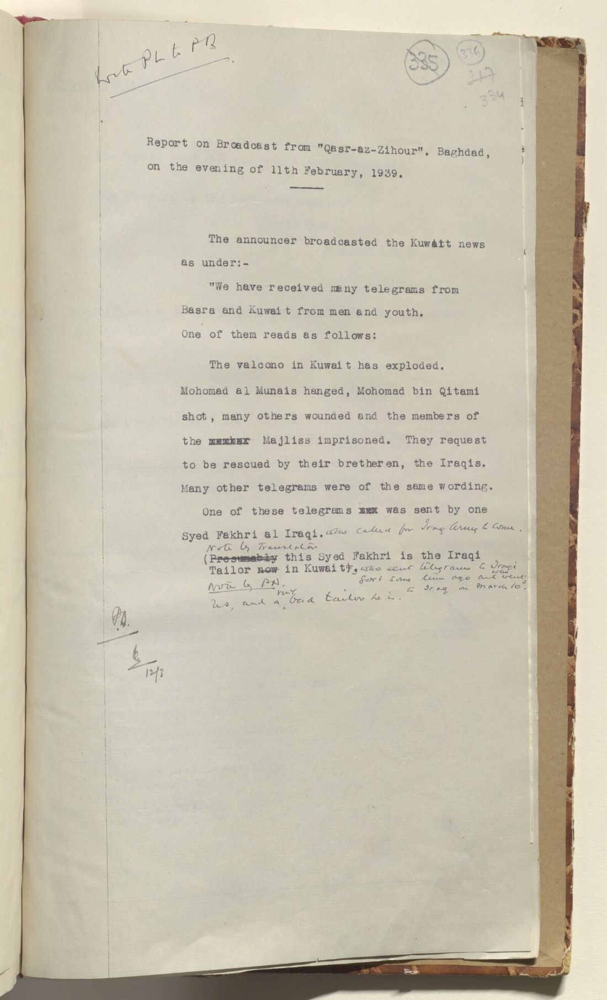

10 to 12 March 1939 · The Political Agent's signed Express Letter C/95 of 12 March 1939 to the Political Resident in Bushire, and a report on a Baghdad broadcast
British records of the shooting of Mohammed Al-Qatami in March 1939
What it is
The first page is from a British report on the days after the elected Council was dissolved. It says that on the morning of 10 March 1939 the police were taking Mohammed bin Munais to prison when they met Yusuf Marzook and "Muhammad Al Qitami, a follower of the former Council". The report claims Mohammed fired first and missed, and that the police fired back, mortally wounding him, hitting Yusuf in the foot and a shopkeeper nearby. A British reader wrote in red in the margin: "The shooting seems to have been a little erratic!" The second page is a translated report of a Baghdad radio broadcast that read out telegrams from Kuwait: "Mohomad al Munais hanged, Mohomad bin Qitami shot, many others wounded and the members of the Majliss imprisoned."
Why it matters
These are papers written in the days of his death. They name him, give the day he was shot, and show how quickly the news reached Baghdad.
Who is meant
Mohammed Abdulaziz Al-Qatami, son of Abdulaziz bin Abdulwahab, who was killed during the Council crisis in March 1939. He is not among his father's heirs, which fits his death before his father.
Page copies






Original text
English translation
Notes
These are the British officials' accounts and they take the ruler's side, so the claim that Mohammed fired first is their version, not a settled fact. The broadcast report is headed 11 February 1939, but it describes the events of 10 March and carries the date 12/3 in the margin, so the heading date reads like a typing slip.
Others named
Sources
India Office Records, British Library, digitised by the Qatar Digital Library. A copy is saved in the family Drive.
Archive reference
- British Library, IOR/R/15/1/549, folios 103 to 106 · Express Letter C/95, 12 March 1939
- Qatar Digital Library · British report on the March 1939 events, page 3
- Qatar Digital Library · Report on Broadcast from Qasr-az-Zihour, Baghdad
How this text was made: Typed by Claude from the scans. Arabic translation by Claude; please review.
Open in the interactive site